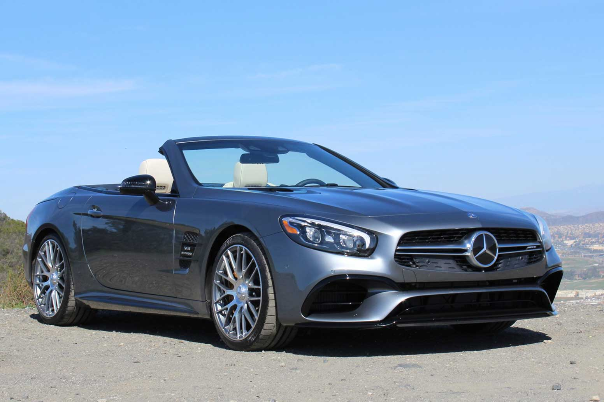
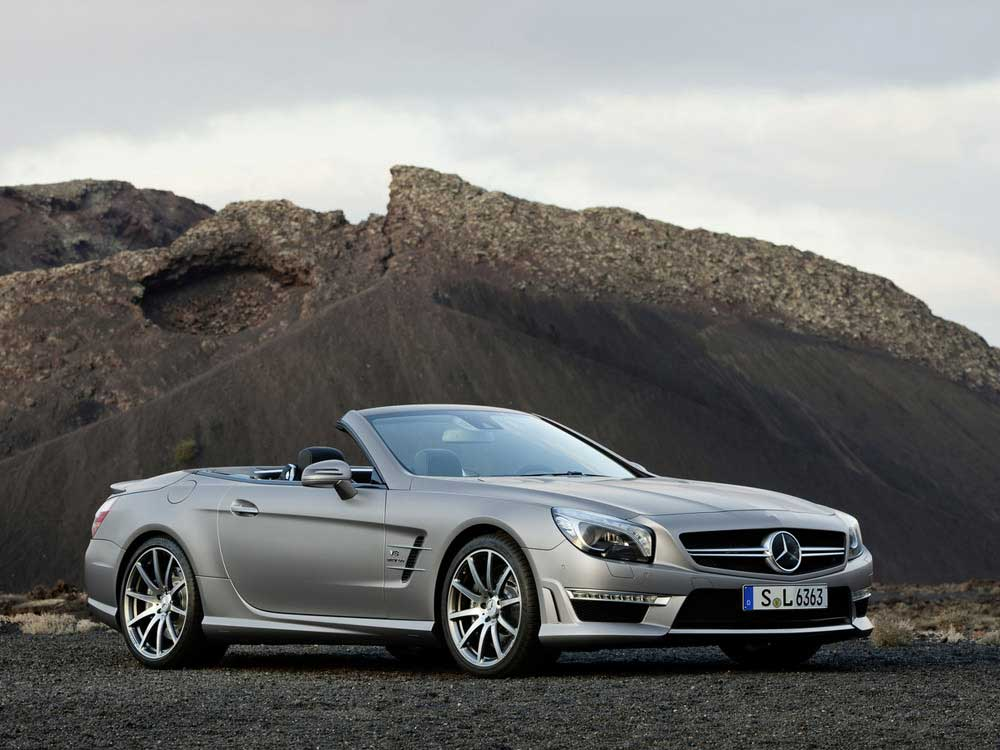
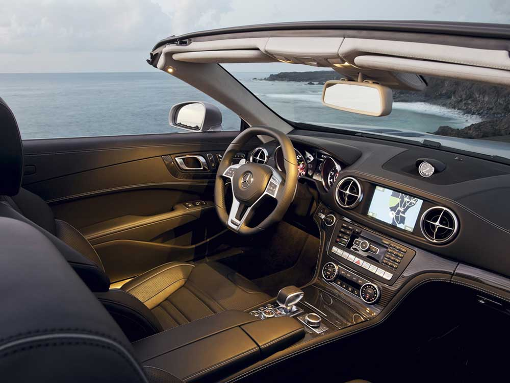
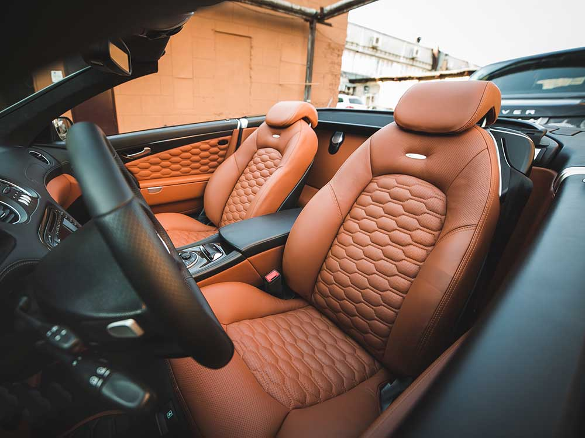
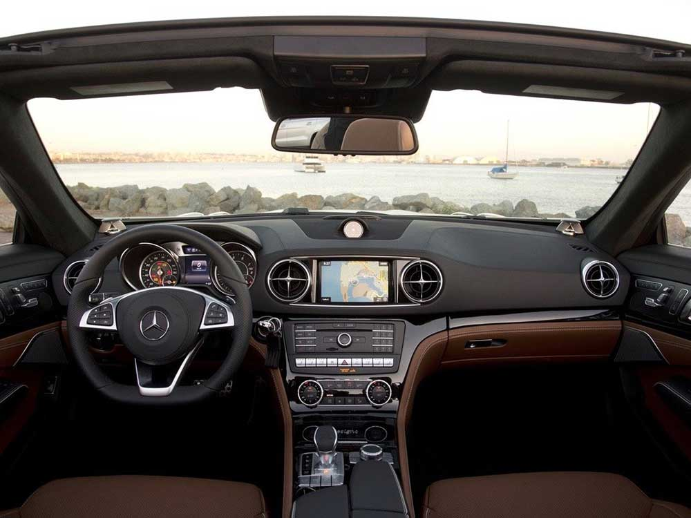
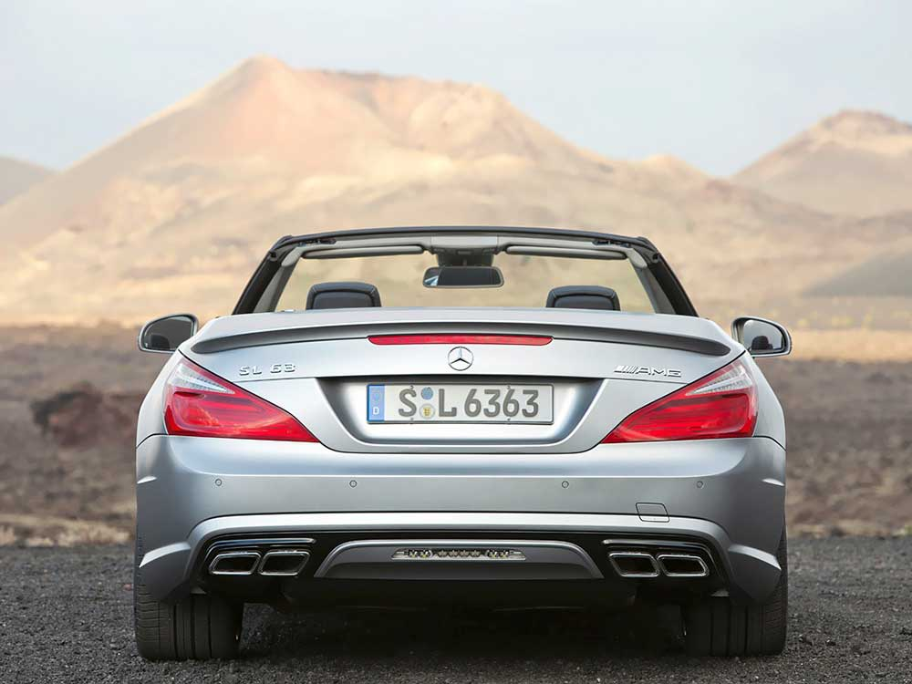
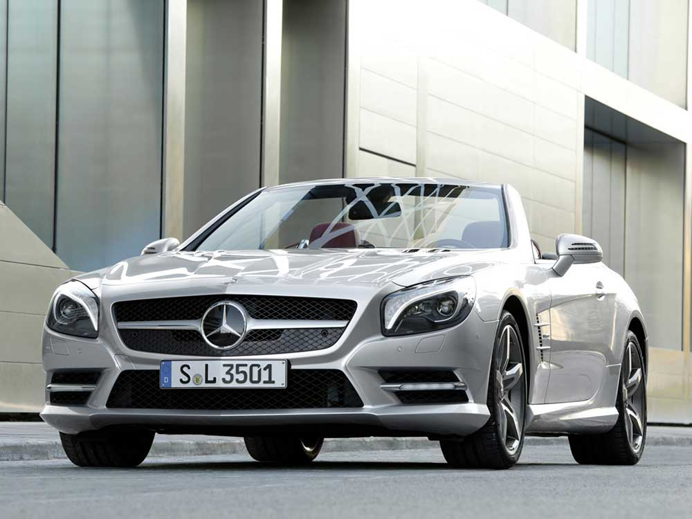

НАЗАД







от 7 490 000 руб.
Комплектации
| Комплектация | Цена*,руб. | Объем мотора, руб. | Тип топлива | Мотор, л.с. | КПП | Привод | Смеш. цикл,л (расход) | Расход до 100 км/ч, сек |
|---|---|---|---|---|---|---|---|---|
| SL 400 AT | 7 490 000 | 3.0 | АИ-95 | 367 | АКПП | задний | 7,7 | 4,9 |
| SL 500 AT | 9 230 000 | 4.7 | АИ-95 | 455 | АКПП | задний | 4.7 | 4.3 |
| SL 63 AMG DSG | 12 120 000 | 4.7 | АИ-100 | 571 | АКПП | задний | 11.7 | 4.1 |
| SL 63 AMG AT | 17 600 000 | 6.0 | АИ-100 | 630 | АКПП | задний | 11.9 | 4.0 |
Аннонимные отзывы владельцев
Чтобы прокормить машину SL-класса, надо быть хозяином бензоколонки. Владельцы Mercedes-Benz SL-класса понимают это хорошо, поэтому при продаже, когда машине исполняется 3-5 лет, цена на неё сильно ниже 50%. И суть здесь не в том, что они ломаются, или требуют особого технического обслуживания.
Машина просто бомбовая, не зря столько позитивных отзывов владельцев машины я в свое время перечитал. Больше всего меня как раз радует наличие мощного мотора в машине и еще автоматической коробки передач. В прошлом году только купил Mercedes-Benz SL-класс, и по довольно выгодной цене, как по мне, то есть за 1500000 рублей. Езжу и доволен этим авто ...
Газпром, мечты сбываются! Давно хотелось и мечталось о кабриолете! И мечте суждено было сбыться, купила 10 летний Mercedes, темно синий, серый кожаный салон, отличная комплектация и за все это счастье заплатила 1000 тысяч рублей! Пришлось брать кредит в Газпрм банке. Но, ведь мечты должны сбываться! Не жалею.